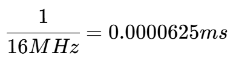
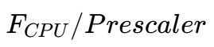
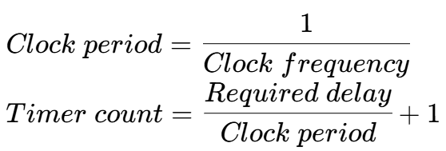

计时器/计数器
以 CPU 频率 16MHz 为例（time period: ）
使用 Prescaler 已降低时钟频率：
| Prescaler | Clock frequency | 8 bit Timer (max delay) | 16 bit Timer (max delay) |
|---|---|---|---|
| 8 | 2MHz | 0.128ms | 32.768ms |
| 64 | 250KHz | 1.024ms | 262.144ms |
| 256 | 62.5KHz | 4.096ms | 1,048.576ms |
| 1024 | 15.625KHz | 16.384ms | 4,194.304ms |
两个计算公式

Note
Timer count 的值必须是一个整型且必须在范围 (0 - 255)
对于 8-bit 计数器或 (0 - 65,535)对于 16-bit 计数器内
相关寄存器
Timer/Counter0 registers: TCNT0
存储计时器计数器当前的值
Timer/Counter Control Register: TCCR0B

| CS02 | CS01 | CS00 | Description |
|---|---|---|---|
| 0 | 0 | 0 | No clock source (Timer/Counter stopped) |
| 0 | 0 | 1 | clkI/O (No prescaling) |
| 0 | 1 | 0 | clkI/O/8 (From prescaler) |
| 0 | 1 | 1 | clkI/O/64 (From prescaler) |
| 1 | 0 | 0 | clkI/O/256 (From prescaler) |
| 1 | 0 | 1 | clkI/O/1024 (From prescaler) |
| 1 | 1 | 0 | External clock source on T0 pin. Clock on falling edge |
| 1 | 1 | 1 | External clock source on T0 pin. Clock on rising edge |
计时器例程
#include <avr/io.h>
void timer0_init() {
TCCR0B |= (1 << CS02)|(1 << CS00);// set up timer with prescaler = 1024
TCNT0 = 0;// initialize counter
}
int main(void) {
DDRL |= (1<<PL0); // connect LED to pin PL0
timer0_init(); // initilise timer 0
while (1) {
if (TCNT0 >=124) { // check if timer count reach 124
PORTL ^= (1<<PL0); // toggles the LED
TCNT0=0; // reset counter
}
}
}
计时器中断
当计时器溢出时调用中断。
Timer/Counter0 Interrupt Flag Register TIFR0
TOV0 (0th bit)
- Set to one whenever TIMER0 overflows
- Reset to zero whenever the Interrupt Service Routine (ISR) is executed
例程
ISR(TIMER0_OVF_vect) {
// TIMER0 overflow interrupt service routine.
// This ISR is called automatically whenever TCNT0 overflows
tot_overflow++; // count the number of overflows
}
int main(void) {
DDRL |= (1 << PL0); // connect LED to PL0
timer0_init(); // initialise Timer0
while (1) {
if (tot_overflow >= 12) { // check if no. of overflows = 12
if (TCNT0 >= 53) { // check if the timer count reaches 53
PORTL ^= (1 << PL0); // toggles the led
TCNT0 = 0; // reset the counter
tot_overflow = 0; // reset the overflow counter
}
}
}
}